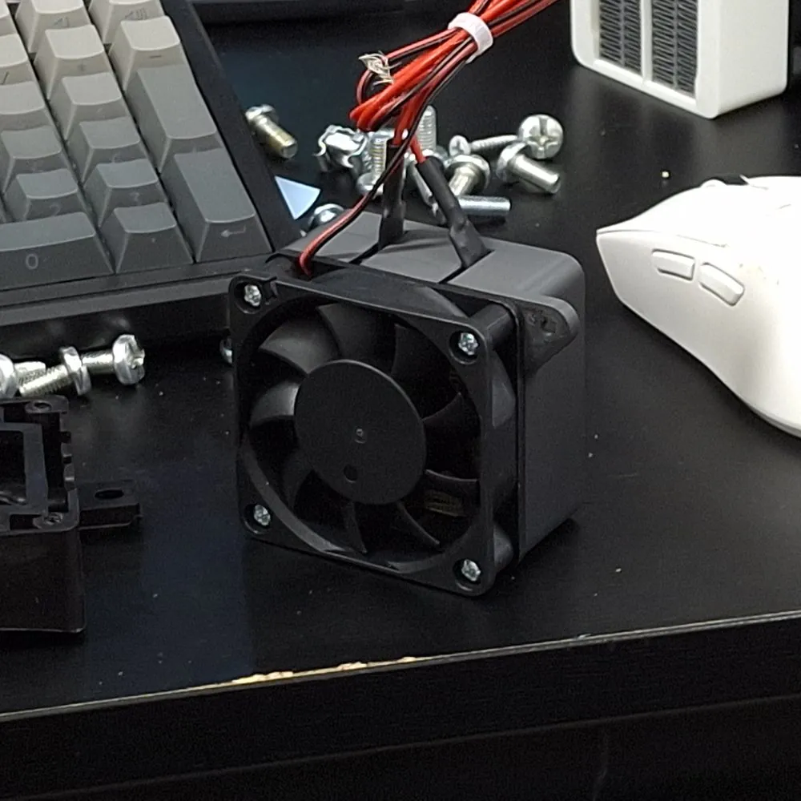
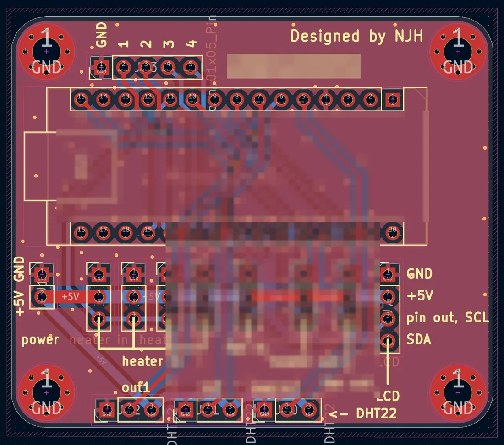

Filament Dryer Cabinet
250개를 넣는
필라멘트 건조장.
3D 프린팅 사업장에서 쓰는 필라멘트 약 250개를 건조하고 보관하는 장비입니다. 랙 캐비닛을 개조하고, 제어보드와 펌웨어를 직접 만들었습니다.

3D 프린팅 사업장에서 쓰는 필라멘트 약 250개를 건조하고 보관하는 장비입니다. 랙 캐비닛을 개조하고, 제어보드와 펌웨어를 직접 만들었습니다.
필라멘트는 습기를 먹으면 출력 품질이 떨어집니다. 사업장에서는 밤부랩 AMS 2 Pro로 건조하고 있었지만, 한 대에 4개씩만 건조할 수 있고 보관용도 아니었습니다.
회사 대표님과 이야기를 나누다 해결책이 나왔습니다. 필라멘트 전부를 건조하면서 그대로 보관하는 장을 만들자.
기성 건조기는 비싸고, 사업장 환경에 맞지 않았습니다. 무엇보다 깊은 장의 뒤쪽까지 채워야 했는데, 서랍형으로 꺼낼 수 있는 제품을 찾지 못했습니다.
그래서 기성 랙 캐비닛을 개조해 서랍형 건조장을 만들었습니다.
서랍은 5T·3T 폴리카보네이트(PC) 판으로 만들고, 3D 프린팅 구조물로 보강했습니다. 깊은 장 안쪽의 필라멘트도 서랍째 꺼낼 수 있습니다.
히터와 팬은 전부 뒤쪽에 두고 아래를 바라보게 배치했습니다. 더운 공기는 위로 올라가니, 처음부터 아래로 불어 내려 위쪽에만 열이 몰리지 않게 했습니다.

히터 모듈. 40mm 팬과 3D 프린팅 덕트
제어 원리는 세 가지입니다. 센서 3개를 내부 위·아래와 외부에 두고, 히터와 팬을 펌웨어로 제어합니다.
내부를 약 53℃로 유지합니다. 공기 속 수분의 양은 그대로인데 온도가 오르니, 상대습도가 내려가 필라멘트가 마릅니다.
내부와 외부의 절대습도를 비교해, 내부가 더 습할 때만 환기합니다. 필요 없을 때 문을 열어 열을 버리지 않습니다.
더운 공기는 위로 몰립니다. 위아래 온도 차이가 생기면 내부 팬을 돌려, 아래 칸도 같은 온도로 맞춥니다.
같은 공기를 25℃에서 53℃로 데우면 담을 수 있는 수분의 양이 약 4.5배로 늘어납니다. 그래서 내부 상대습도는 바깥의 약 22%까지 내려갑니다.
| 실내 (25℃) | 건조장 내부 (53℃) | |
|---|---|---|
| 상대습도 40% | → | 약 9% |
| 상대습도 60% | → | 약 13% |
| 상대습도 80% | → | 약 18% |
밀폐 상태를 가정한 계산값입니다(Magnus 식). 실측값이 아니며, 목표 온도 53℃도 기억에 의존한 값이라 정확하지 않을 수 있습니다.
아두이노 나노를 올리는 제어보드를 KiCad로 직접 설계했습니다. 히터 5개를 릴레이로 켜고 끄고, 센서 3개와 팬을 연결합니다.
처음에는 LCD와 버튼 4개로 조작부를 넣었지만, 하드웨어 문제를 겪으며 조작부를 줄이고 자동 제어에 집중했습니다.


펌웨어 버그가 많았고, 하드웨어 문제까지 펌웨어 탓으로 잘못 판단해 시간을 썼습니다. 주된 원인은 노이즈와, 전원을 넣는 순간 튀는 전압으로 보고 있습니다. 증상만 보고 원인을 단정하지 않게 됐습니다.
별도 보호 회로 대신 펌웨어로 온도를 제어했고, 실제 시험으로 히터가 과열될 가능성이 없다는 것을 확인했습니다.
기성품보다 싸게 만들려고 시작했지만, 부품 발주 실수와 시제품 단계에서 반복된 실패로 제작비가 약 100만 원까지 늘었습니다.
사업장에 설치해 실제로 쓰고 있습니다. 입대 전, 제가 없어도 운영할 수 있게 인수인계 문서를 남겼고, 이후 따로 문의는 없었습니다.